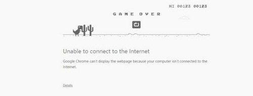

交互规范 - 尼尔森交互原则 / Interaction Specification

Create by Skyfire At Beijing,P.R.China
Compiled in 2016-07-19 17:21:47
简约 · 极致 · 传承
原则名称

说明

备注
状态可感知原则
(Visibility of system status)
当用户触发了操作时，需要即时给出用户操作的反馈，能够让用户知道发生了什么，当前操作是否成功、是否有效。操作因为网络原因或者其他一些因素导致操作失败时，是否继续进行请求，还是直接给出操作失败的提示？
如果说操作成功，但是需要进行一段时间才能加载出结果，此时则需要让用户知道操作已经成功，比如通过进度条、旋转的菊花，或者其他一些动画效果来让用户知道正在加载。
用户当前所处的位置是否明显？比如在导航栏的中间的标题会标注出来用户当前所在的位置，而在底部的Tab中则会通过交互后的另一种样式来让用户知道当前的位置。通过这些提示能够让用户知道当前位于产品中的位置，防止用户迷失。
贴近用户认知
(Mach between system and the real world)
在《About Face 3交互设计精髓》提到了关于模型的3个概念，分别是现实模型、心理模型与表现模型。现实模型是指产品本来的是怎样的，心理模型是指用户认为产品是什么样子的，表现模型则是通过设计方式来让用户了解产品，好的设计应该是基于用户的心理模型，而不是现实模型，如下图。
用户的操作可控
(User control and freedom)

为什么一些然并卵的功能会让用户觉得感觉很好？比如某应用的一键加速功能，以及在楼道里的空调控制器，虽然这些功能都没有什么实际的作用，但是依然会让用户感觉良好，因为用户能够感觉到自己可以对当前的状态进行控制。
在App中会有着工具栏来让用户对当前视图来进行操作，另外也会提供撤销和重做功能，在重要的功能被执行之前也会让用户进行二次确认，这些都是为了能够让用户感觉到自己对当前的状态有着绝对的控制权。


一致性原则
(Consistency and standards)
在同一个App中，相同的场景下，相同的操作触发的结果应该是一致的，不然就很有可能造成用户的疑惑和困扰。另外在相同的场景下的文案和图标也应该是保持一致的，而不是说在某些应用中出现的收藏与喜欢混在一起.
或者是有时候使用心形的图标，而有时候则采用五角星的图标，这样就会让用户造成困扰。在同一个应用内，相同的使用场景下，操作、文案以及图标等应该保持一致。
防错原则
(Error prevention)
比在用户出错时给出即时反馈和解决方案更好的处理方式，则是尽可能的通过设计来防止用户出错，在用户操作之前通过一些限制来约束用户的行为。可以通过缺省状态自动填充或者利用一些规则来避免用户出错，比如在纯数字输入的时候调用纯数字键盘，减少用户误操作的可能性。
再认强过回忆
(Recognition rather than recall)
用户不需要去记住从一个页面到另一个页面的信息，这些操作的说明应该是用户可以直接看到的或者是易于获取的。尽量减少用户对操作目标的记忆负荷，将需要用户记忆的一些关键性信息直接展现给用户，在用户进行二次确认之前，再次将这些信息展现给用户。
灵活高效原则
(Flexibility and efficiency of use)
永远为中间用户进行设计，同时也要注意新手用户和专家用户，能够引导新手用户成为中间用户，同时也不要阻碍中间用户成为专家用户。功能的设计是否符合用户的使用习惯，能不能高效快捷的帮助用户完成任务？对于所有的可点击的部分，是否能够直接进行识别，会不会让用户产生疑惑？
易扫原则
(Aesthetic and minimalist design)
在《Don’t make me think》中有这样的一个观点，即我们在使用互联网产品的时候不是阅读而是扫描，我们总是处在忙碌之中，而碎片化的使用场景也让我们在使用产品的时候，更多的是通过扫描来获取信息。
所以在设计的时候，需要能够合理的进行信息的组织与展现，可以删除一些可有可无的信息，利用关联性来进行信息的合理组织，同时将一些不重要的信息进行隐藏，但又保证用户在需要的时候能够找到这些信息。通过这些手段来将重点的信息进行突出，保证用户在扫描的时候就能够发现这些信息。
容错原则
(Help users recognize，diagnose，and recover from errors)
在用户出错的时候，不仅仅应该是给出用户一个出错代码，用户很有可能根本看不懂这串代码。在出错的时候，需要能够用用户能够看懂的语言来告诉用户当前所处的情况，并且给出用户出现这种情况可能的原因以及相应的解决方案，如果不能够给出解决方案，那就给出其他的一些操作，比如google的小恐龙…
帮助文档
(Help and documentation)
产品的功能最理想的状态下当然是不需要帮助提示的，需要提供帮助提示的大致分为以下几种，一种是一次性的帮助文档，比如采用模态视图，在初次使用功能的使用出现，以后不再出现，一种是需要长期存在的，比如在帮助中心中的FAQ，以及一些功能说明。还有一种就是对于比较复杂的产品提供的帮助文档，帮助用户进行产品使用的学习。
